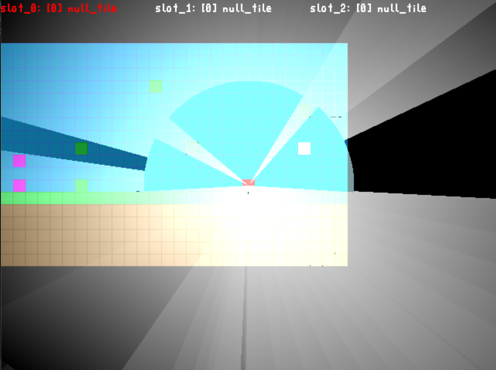
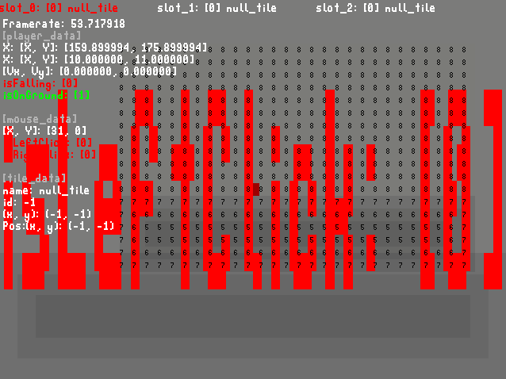
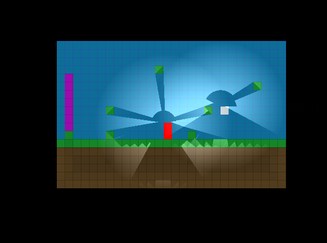
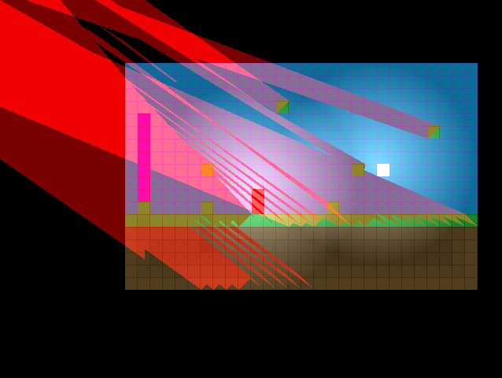
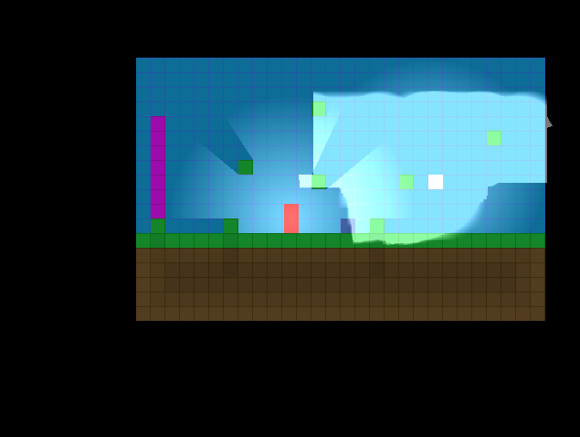
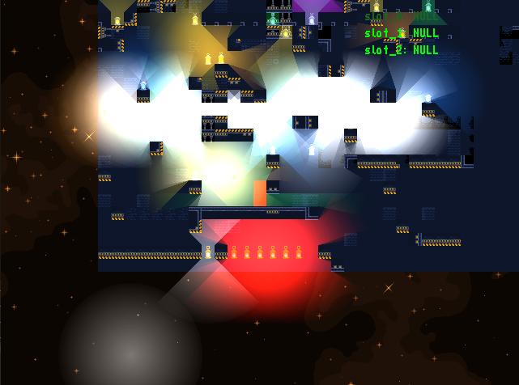
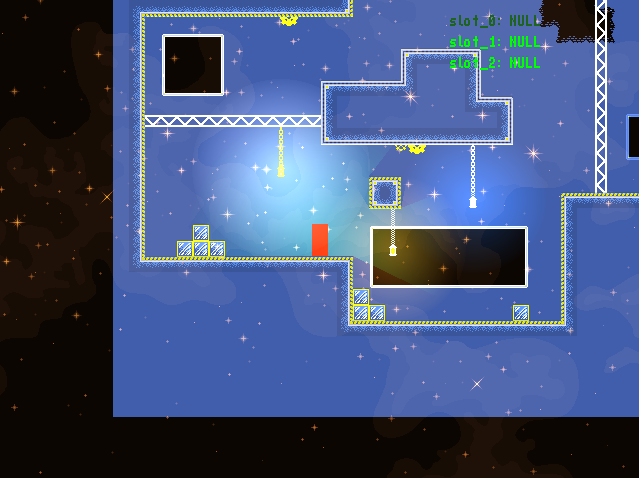
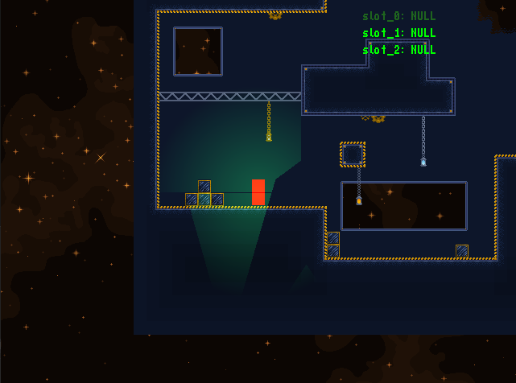
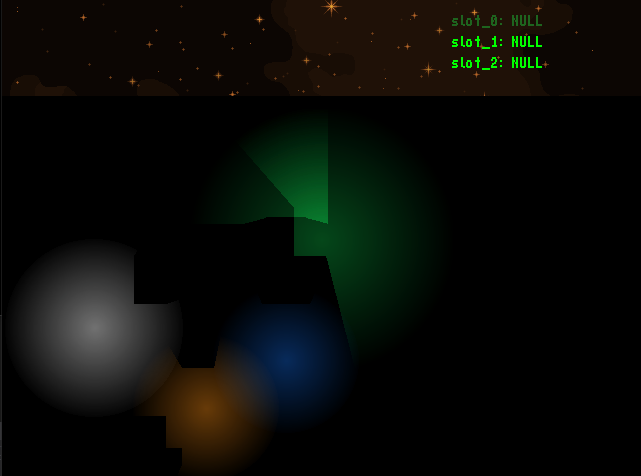

Here's a collection of some past images taken during development and debugging, that were so wild I had to capture the moment.

16 December 2022A glitch from some of the first attempts at calculating and rendering light. The effect is cool, but not quite what I was going for.

27 January 2023Something's wrong with the debug menu here. Also the background looks a little... off.

27 February 2023Glich where shadows were being rendered on the wrong side of the object.

27 February 2023Shadows (shown in red for testing purposes) rendered all coming from the top left of the screen. That was a fun one to fix.

24 April 2023I'll be honest, I don't remeber what caused this glitch, but the lights were being rendered in all sorts of strange configurations.

30 May 2023One of the first attemps at rendering a tilemap with the new tileset I made. As you can see, there were a few slight problems. This one's a personal favorite.

1 June 2023A strange lighting effect I found while messing with rendering. I think this one is quite pretty, enough so that I might find a way to implement it.

11 July 2023Caused this glitch while trying to improve performance of the light calculations.

13 July 2023I messed with the tilemap renderer. This happened.